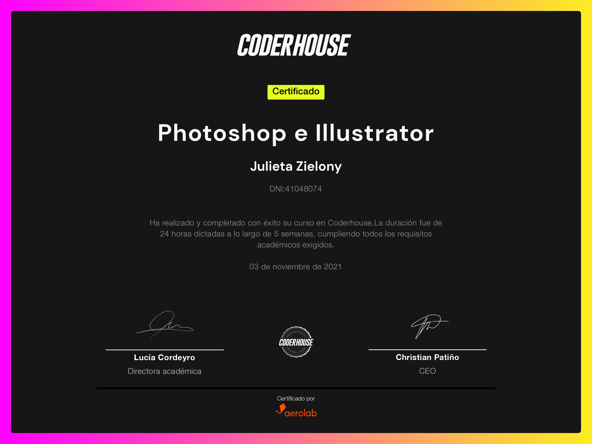
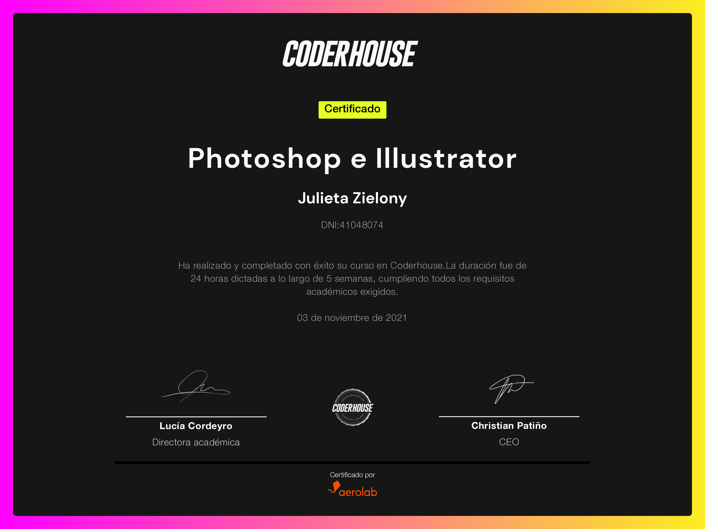
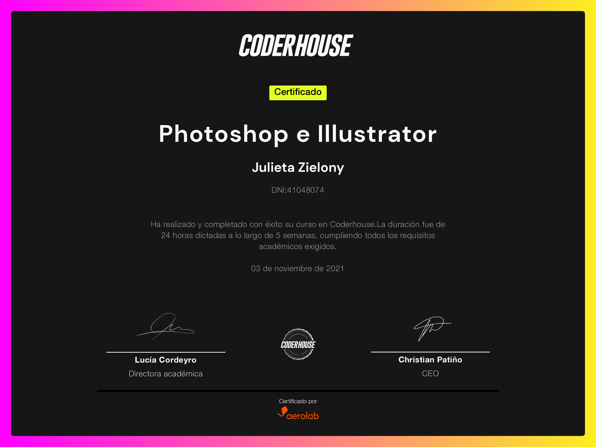

Curriculum Vitae Julieta Zielony

23 años
Villa Crespo
Digital Marketer y Profesora de inglés
Experiencia Laboral
Asistente de Marketing Digital y Desarrolladora Web Junior en The Bit Agency Marzo
2022-actualidad
Profesora particular de clases de inglés 2017-actualidad
Community Manager en Ferromadera Octubre 2021-Enero 2022
Ayudante de cocina en Sheikob's Bagels Julio 2019-Diciembre 2019
Ayudante de ventas mayoristas en Agustina Saquer Febrero 2018-Julio 2019
Vendedora de salón en Agustina Saquer Febrero 2017-Diciembre 2018
Data Entry y Ayudante de Cocina en Urban Crepe Febrero 2016-Diciembre 2016
Experiencia Academica
Carrera de Desarrollo UX UI en CoderHouse Noviembre 2021-actualidad
Carrera de Marketing Digital en CoderHouse Julio 2021-Enero 2022
Licenciatura en Gastronomía Agosto 2017 - sin finalizar (87%)
Bachiller Técnico con orientación en Producción Musical en Escuelas Técnicas ORT
2010-2015
Otros Conocimientos
Inglés bilingüe
HTML y CSS Básico
Certificación de Google Ads Display y Search
Certificación de Google Analytics
Photoshop
Ilustrator
Paquete Office
Certificados
Community Manager
 Growth Marketing
Growth Marketing
 Publicidad en Redes Avanzado
Publicidad en Redes Avanzado
 Photoshop e Ilustrator

Photoshop e Ilustrator

Growth Marketing
Publicidad en Redes Avanzado
Photoshop e Ilustrator
